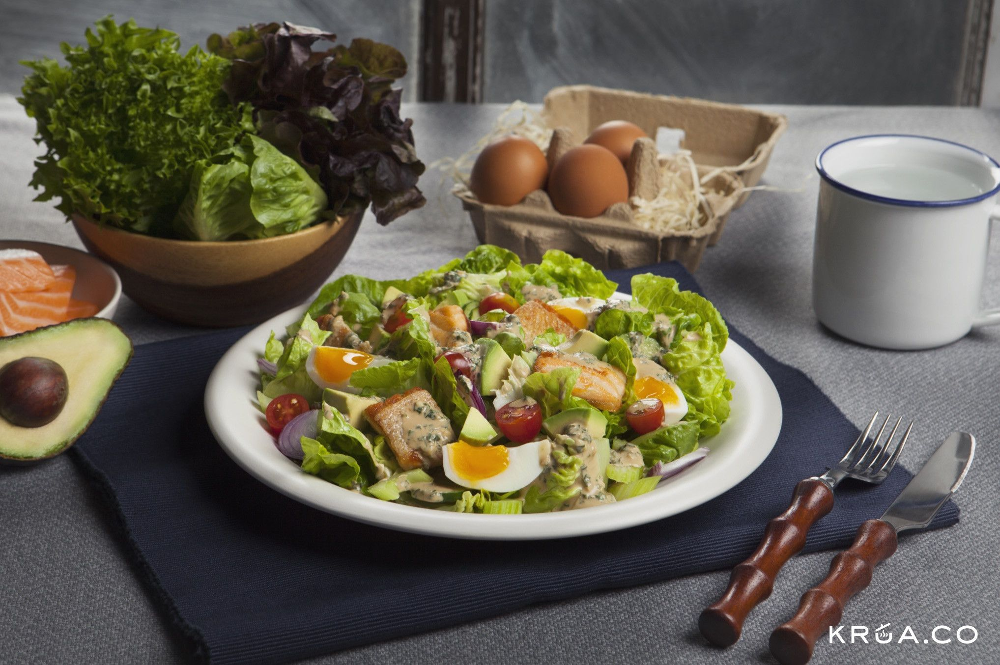
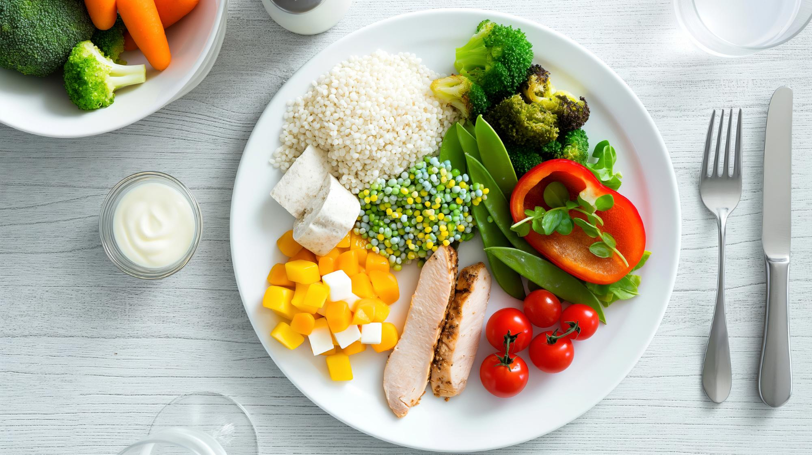

อาหารคลีนคืออะไร
อาหารคลีน คือ อาหารที่เน้นความสดใหม่ ไม่ผ่านการปรุงแต่งมาก ใช้เครื่องปรุงน้อย ลดน้ำตาล ไขมัน และโซเดียม เพื่อให้ร่างกายได้รับสารอาหารที่ดีต่อสุขภาพ

ข้อดีของอาหารคลีน
- ลดน้ำหนักได้ง่ายขึ้น – เพราะอาหารคลีนส่วนใหญ่มีแคลอรีต่ำและไม่ผ่านการแปรรูปมาก
- ดีต่อสุขภาพหัวใจ – ลดไขมันทรานส์และน้ำตาล ช่วยป้องกันโรคหัวใจ
- ระบบย่อยอาหารดีขึ้น – อาหารธรรมชาติย่อยง่าย มีไฟเบอร์ช่วยเรื่องการขับถ่าย
- ผิวพรรณดีขึ้น – ลดอาหารขยะ ลดสิว ผิวดูสุขภาพดี

หลักการและตัวอย่างอาหารคลีน
หลักการกิน
- เลือกวัตถุดิบสดใหม่
- หลีกเลี่ยงอาหารแปรรูปหรือปรุงแต่งมาก
- เน้นโปรตีนคุณภาพสูง เช่น ไก่ ปลา ไข่ เต้าหู้
- กินผักและผลไม้หลากสีให้ครบสารอาหาร
- เลือกคาร์โบไฮเดรตจากธัญพืชไม่ขัดสี
ตัวอย่างเมนู
- อาหารเช้า: ข้าวโอ๊ตกับนมอัลมอนด์, ไข่ต้ม, ผลไม้สด
- อาหารกลางวัน: ข้าวกล้องกับไก่ย่าง, สลัดผักรวม, ถั่วลันเตานึ่ง
- อาหารเย็น: ปลาอบสมุนไพร, ผักนึ่ง, มันเทศอบ
- ของว่าง: ถั่วอบ, โยเกิร์ตไม่มีน้ำตาล, ผลไม้สด
ข้อควรระวัง
- การกินอาหารคลีนต้องสมดุล ไม่กินผักผลไม้มากเกินไปจนขาดโปรตีน
- ต้องวางแผนมื้ออาหารล่วงหน้า เพื่อให้ร่างกายได้รับสารอาหารครบถ้วน